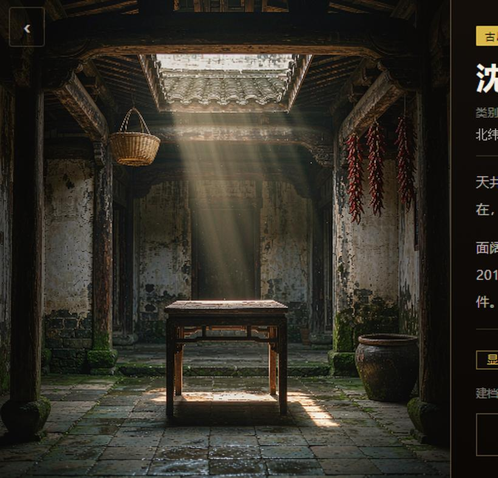
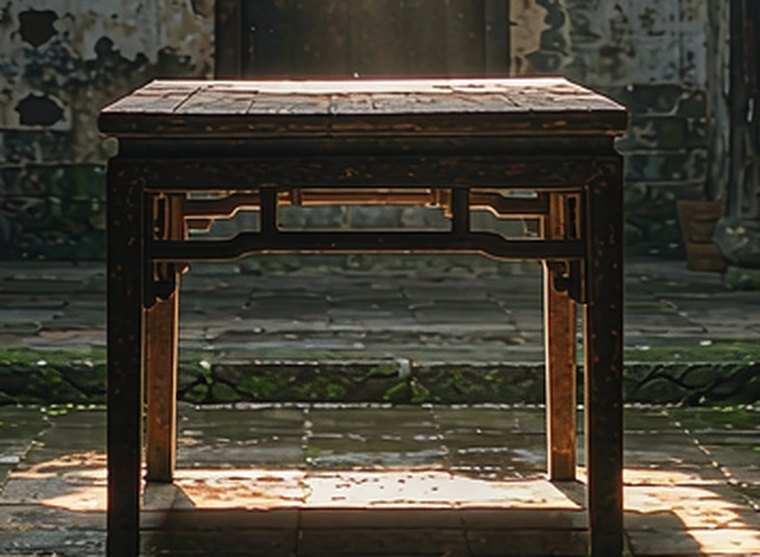
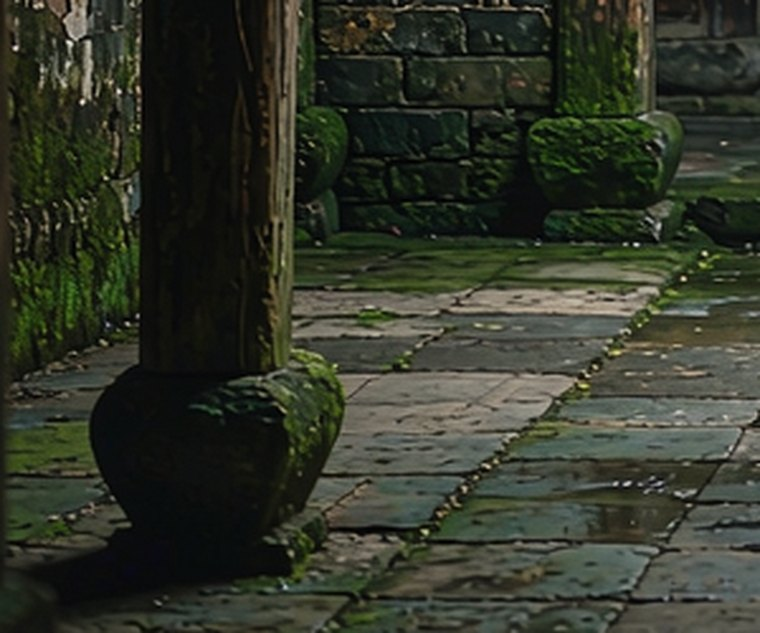
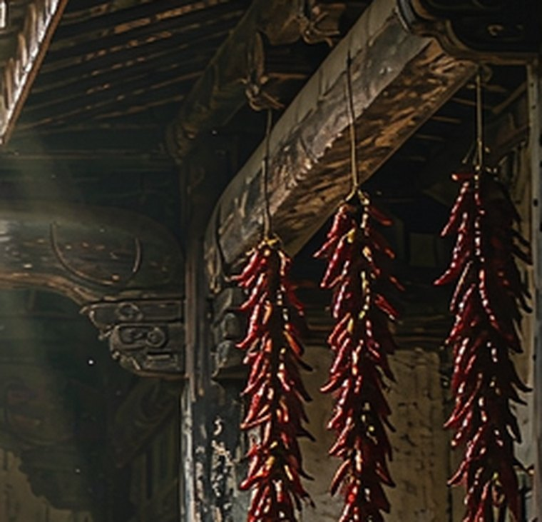

屏幕上只给你四行。这里是它的一百年。
天井里的青石板被雨水磨得发亮。灶屋的柴火味还在，堂屋正中那张八仙桌，四条腿已经换过两条。
面阔三间、进深两进，穿斗式木构，小青瓦屋面。2019 年落架修缮过一次，梁架与柱础仍是原构件。
屋子空下来是近十几年的事。老人走后，门常年半开，只有檐下那串辣椒，每年秋天还会被重新挂上去。

古厝 · 民国北纬 28.170700 · 东经 112.931650
天井里那道光，是这屋子里唯一还在走的东西。
屏幕上只给你四行。这里是它的一百年。
天井里的青石板被雨水磨得发亮。灶屋的柴火味还在，堂屋正中那张八仙桌，四条腿已经换过两条。
面阔三间、进深两进，穿斗式木构，小青瓦屋面。2019 年落架修缮过一次，梁架与柱础仍是原构件。
屋子空下来是近十几年的事。老人走后，门常年半开，只有檐下那串辣椒，每年秋天还会被重新挂上去。



「那时候一大家子十几口人，天井里摆两张桌子吃饭，落雨天就坐在廊下看檐水……」
录音还没放进来（assets/audio/story.m4a）。
四面屋檐围出一方露天。采光、通风、排水都靠它，雨水顺着瓦槽汇进来，再从暗沟排出去。
不用一根钉子。柱子直接顶住檩条，穿枋把柱子串起来，墙可以薄，甚至不承重。
木柱不直接落地，垫一层石头，隔潮、防白蚁。石头上的青苔，是年份的记号。
一方八人，婚丧嫁娶、分家议事都在这张桌子上。桌面被磨出的那层包浆，是几代人手掌的痕迹。